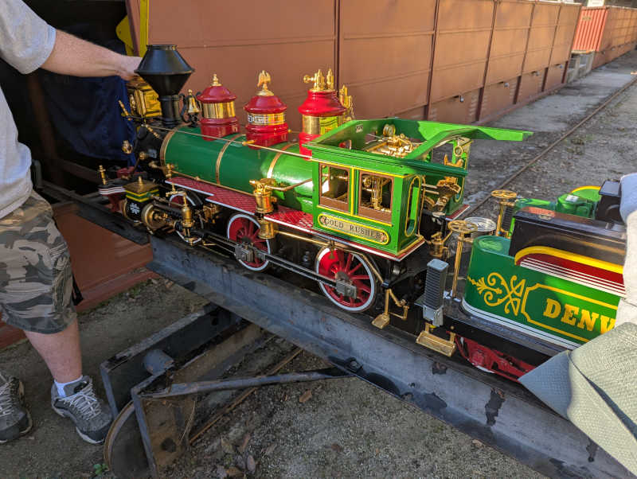
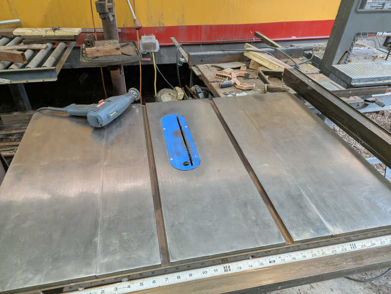
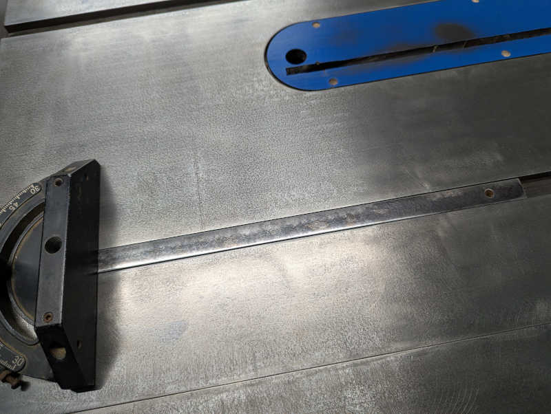

Sunday 2026/2/8#
- 4.5 hours today, 10.5 hours cumulative
8:30AM - 1:00PM (4.5 hours)#
Arrived at LALS to see the fabled “Gold Rusher” locomotive out for some maintenance work. It gleamed beautifully in the morning light. I hope to see it choo-choo down the rails at some point in all its shiny glory.

I grabbed a leaf blower and walked the west loop. Noticed several pieces of rusty debris in close proximity to each other but with no obvious source. All rail within ~4’ in either direction looks fine to my eyes. Later Kristman identified them as heavily corroded rail tie plates and associated fasteners. I think I would have noticed missing tie plates so where did these come from? Still a mystery.
The signal (KAB?) by the curved westbound rail leading to O’Brien-Moore bridge was correctly green as expected when I walked past. But later coming back the other way, I happened to look over my shoulder and saw it was red with no train. This may be related to that oddly dual-purposed rail segment B-K2. For the moment I can only report it as a known false red to Strawn and at the safety meeting to Sunday operations train engineers.
Helped Alexander restock the cold water refrigerator in the ticket booth. Then figured I might as well stay on the theme and went over the Kountry Kitchen beverage cooler as well. Several flats of drinks are now all in the refrigerator, opening up storage shelf space.
While moving bottles towards the front, I found there’s something brown and sticky (Coca Cola? Pepsi? Dr. Pepper?) on the bottom. I wiped up the stainless steel, and also bottoms of several cans that were sitting in that stuff.
Sent pictures of updated status (storage shelf, cooler left, cooler right) to Dorado for his information.
Meeting up with friends for lunch today so departed at 1PM.
Friday 2026/2/6#
- 3.0 hours today, 6.0 hours cumulative
11:00AM - 1:30PM (2.5 hours)#
Met up with Strawn and Harper by panel K to see why signal light KD is dark. An ultimately unsatisfying session because after probing some panels and wires the light came back on without any intentional change on our part. Intermittent connections make us tear our hair out.
While probing panel K, learned that a segment of rail (B-K2) has an associated train presence detector board for signal purposes AND hooked up to another detector that triggers a timer to control signal panel power. The timer functionality is usually done by a short dedicated length of rail. What are the tradeoffs between using dedicated rail versus dual-purposing like this?
Panel K is also unusual in having an always-on exhaust fan pushing warm air out of the enclosure. This may be related to the timer board (since it needs to stay on 24x7 to control whether the rest of the panel comes on) or it may be due to the fact this panel gets a lot of sun exposure. New idea for the project to-do list: add a rail side scenery facade building that also act as panel K sun shade.
With some lessons learned about panel K and KD illuminated, attention moved on to a rail switch motor control module in panel J. The new module is not an identical drop-in replacement for the old so wiring verification and remapping had to be done first. This was more difficult than it should be, partly due to technical problems like a jumper wire that didn’t actually jump, and to non- technical issues like low blood sugar. Fix for the former: different jumper wire. Fix for the latter: get lunch.
2:30PM - 3:00PM (0.5 hours)#
Continue panel J rail switch motor board replacement. Good news: the new board sees user pressing on the rail side pole switch. Bad news: the new board isn’t commanding the MOSFET to send power to the motor. Without power the motor doesn’t turn and the switch doesn’t get thrown.
I had to be out the gate by 3, Harper and Strawn continued working.
Monday 2026/2/2#
- 3.0 hours today, 3.0 hours cumulative
First yellow time card as full member!
1:00PM - 4:00PM (3 hours)#
Helped Strawn with signal work.
Opened up the Sherwood station crossing signal boxes because they aren’t doing anything as if they don’t have power. Tracing through the power supply board, everything looks to be in order. That’s when we noticed the signals are now powered up. Hypothesis: there’s an intermittent connection somewhere in the power supply board, and it woke up when we were poking around with a meter. Not fixed, but at least we’ve narrowed it down and it’s working for now. I guess we can try wiggling the power board the next time it happens.
Moving on to panel G to diagnose missing red light on the signal bridge. Flipping the light driver board to test mode, we saw it was not even trying to illuminate red. Swapping out the board allowed red light to illuminate. I performed this board swap as my first hands-on signal work and I was supervised by no less than five other people. I feel important.
Next: why is it trying to show red light when there’s no train? Found a busted bond wire to replace and now signal bridge lights show red when there’s a train and green when there is not. Success!
Next up panel H. While waiting for Smith to arrive, probed to find current mapping from rail segments to detector boards. Then consulted with Smith to understand why there’s a signal showing red and yellow simultaneously, something that should never happen. Traced electrical behavior through rail and found another bond wire to replace, but light is still showing both red and yellow simultaneously. Smith will look at it some more.
While working on H, Strawn noticed light going up to Mountain Division is indicating a train when there isn’t one. This is new behavior within the past few hours. Harper was working in that area in preparation for future work and may have inadvertently damaged a feed wire. Fortunately it was quickly diagnosed and repaired.
7:00PM Board Meeting#
Among various club business, three probationary members were voted to full membership: Syring, Turner, and me!
Sunday 2026/2/1#
- 1.5 hours total
- 0 facility (61.25 out of 18)
- 1.5 conductor (25.25 out of 18)
- 0 kitchen (7.75 out of 6)
Last orange card as probationary member.
8:45AM - 10:00AM (No club credit)#
Two training laps on Santa Fe Electric with Ronne in the first car going over things as we went. I had to articulate what track signals I see, explain what I think they meant, and what I should do about it (if anything.) Also included a few randomly called whistle stops for me to practice stopping promptly without being jarring. Learning the throttle engagement curve on SFE control knob feel a lot like learning a car manual transmission’s clutch engagement zone. Practice makes perfect!
Ronne thinks I’m doing very well and on track towards my goal of getting certified as an engineer on club engines for public runs. A good vote of confidence as I work towards fulfilling other requirements.
10:45AM - 11:00AM (0.25 conductor)#
Safety meeting
12:00PM - 1:15PM (1.25 conductor)#
Lunch relief conductor on Santa Fe Electric
Misc#
Plus other minor facility tasks like helping to take out the garbage of Kountry Kitchen. Nothing big enough to track.
Reviewing my photo record of my time card, I realized I forgot to put down my name and today’s date on the card. Oops! Thankfully I have more than enough hours to finish out my probationary period and missing these 1.5 hours won’t matter.
Tuesday 2026/1/27#
- 7 hours total
- 7 facility (61.25 out of 18)
- 0 conductor (23.75 out of 18)
- 0 kitchen (7.75 out of 6)
9:45AM - 1:00PM (3.25 facility)#
Joined for a full day of signal work! Started by helping Strawn make panel I talk to panel R so that a red signal in zone I will trigger the appropriate yellow signal in zone R. Learned valuable lesson that these panel connections have isolated ground wires. In hindsight it was something both of us should have known.
After that success, moved on to panel S. I put my familiarity with leaf blowers to work clearing out leaves to help see where wires already existed. Once wires were located and identified, it didn’t take long for Strawn and Harper to restore power timer functionality. The timer module needs a bit of programming to make it display a countdown and adjust the time span, this is now on Strawn’s to-do list.
On the way out to lunch, we noticed false red/red displaying for main line / mountain division. Strawn and Harper agreed that should take priority over what they had on their to-do list for the afternoon.
2:00PM - 4:45PM (2.75 facility)#
After lunch Strawn opened up panel H to see why mountain division has a false red/red. Found several error conditions that led to replacing two broken bond wires and one broken track resistor. Unfortunately the light is still not behaving quite right. Now the signal is green for main line, which is correct, but mountain division light has both red and yellow illuminated even though track voltage levels are consistent with a green. With wiring fixed and voltage correct, the problem is likely somewhere within Smith proprietary analog logic circuits.
We also found the both adjacent western blocks are completely unpowered with zero train presence sensing voltage. Thus trains on those blocks are not being tracked by the signal system. This has repercussions beyond today’s scope of work, will have to come back later.
After today’s session I feel I can do some basic signal issue diagnosis using a voltmeter, looking for 12-16VDC vs. 6-8VDC vs <1V DC. Probably can’t fix anything without access to signal panels, but can gather information to help make repairs faster.
For next session: bring ferrule crimp kit and bring iPad online with Test Flight for the signal system reference app.
4:45PM - 6:00PM (1.25 facility)#
After Harper and Strawn departed, I went back to my solo project: club’s old table saw. I cleaned off the top surface on Jan 10th but the grinder-mounted Merryland strip disc could not get into the pair of recessed guide rails so they remained rusty.

Today I brought some drill-mounted steel wire wheels that I can use to clean out those slots. Taking care not to (further) mar the top surface with those steel bristles.

Once those were clean, I put the guide back into the slot and noticed it was also covered with rust. Good thing I saw it while I have all my tools handy, so I could make it all nice and shiny too.

After applying a coat of oil to keep rust from immediately returning, I am content to call the table saw project done for now. Pending evaluation and feedback for improvement.
Sunday 2026/1/25#
- 5.5 hours total
- 2.25 facility (54.25 out of 18)
- 3.25 conductor (23.75 out of 18)
- 0 kitchen (7.75 out of 6)
8:30AM - 10:45AM (2.25 facility)#
Lots of leaves dropped on the water wheel feature. Blew and raked three garbage cans worth of leaves for the organics bin while McCabe worked on the debris screen. I wasn’t confident I could put it back together so I hadn’t taken it apart in my previous work sessions. Today was the first time I could watch McCabe take it apart, shovel accumulated dirt, and put it back together. Now I can handle doing the same the next time I shovel out the reservoir.
Learned the fine mesh filter looped over the drain pipe exit were nylon sheer knee-high socks. The old one was retired and a new one installed, with a few extras available for the future.
After the water wheel was sorted out, took the leaf blower and walked the west loop. Leaf clearing was easier because Tagochi had already done some of it with a gas-powered blower. Usual rocks and branches, nothing major.
As I completed my west loop walk, Rodstein reported a problem with the east loop: rails over a bridge were loose, moving as much as 1/4" laterally which is bad. I join the crew making an expedient field repair to steady the rails for Sunday ride operation. A real fix will be needed later.
10:45AM - 11:00AM (0.25 conductor)#
After safety meeting I was slated to conduct SPPA, but Tagochi needs more conductor hours so I gave up that seat.
11:45AM - 12:45AM (1.0 conductor)#
Santa Fe Electric conductor duty. McCabe handed off to me, and I handed off to (?) at lunchtime.
Lunchtime entertainment#
During lunch break, saw Jay Leno stop by with his White (that’s the brand name) steam car. Judging by its green color, I guess it is the 1909 Model M featured in this video.
Love that the thing was designed without an electrical system. Not just lack of electronics: lack of electricity! No spark plugs, no ignition. All lights are acetylene gas burning lamps, including the dashboard instrument light.

As he departed he gave us a toot of the horn – a multi-tone steam whistle, naturally.
1:30PM - 3:45PM (2.25 conductor)#
Resumed conducting Santa Fe Electric engineered by Blake. Continued for the rest of the day including last train of the day duty of locking west gate.
Miscellaneous#
Saw that someone performed the experiment discussed at general member meeting. I cautioned against using vinegar on corrosion concerns. Well, they were right it would kill weeds, and I was right it greatly accelerated rail corrosion. (And probably fasteners, switches, etc.) I stand by my opinion rail condition is an important concern at a train club.
The pump house clock has been one hour off for several months, since the time we were supposed to “fall back”. Alexander helped me adjust the clock so it reads correctly again. That was an adventure but we should be able to do it faster in a few weeks when we “spring forward”. Afterwards we were told Harrison could do it quickly so I should ask him about it the next time I see him.
Got a chance to look inside the club library, saw the collection included a few out-of-print titles that I would be interested in digging into later. Including Kozo Hiraoka’s Climax and Pennsylvania A3 Switcher books.
Dinner at Tallyrand. They do a solid chicken fried steak.
Tuesday 2026/1/20#
- 2.5 hours total
- 2.5 facility (52 out of 18)
- 0 conductor (20.5 out of 18)
- 0 kitchen (7.75 out of 6)
2:00PM - 4:30PM (2.5 facility)#
Accepted Strawn’s invitation to join in signal work today though I only got to participate towards the end as I had an existing eye doctor’s appointment. Still, I got to help a bit and learned a lot doing it.
The biggest lesson of the day: all my past career skills trying to make sense of poorly documented legacy code built up over decades will transfer directly to making sense of poorly documented track signal wiring built up over decades.
Past work have not necessarily been done with maintainability in mind, as demonstrated by fasteners only accessible from below. Which today means we would need to pull up the track segment to get to it. They likely built the assembly while laying the track and plopped them into the ground together. Not accounting for the possibility someone may need to service the switch independently at a later date, like today.
History can also be found in wires that today goes nowhere and connect to nothing, trying to tell me stories of projects past.
I had expected to see major differences between the components I’ve used for my indoor electronics projects and track signal equipment out in the elements. Like extensive waterproofing to mitigate corrosion and studious grounding to maintain signal integrity. I didn’t see much of that at first glance. I hope I’m just overlooking mechanisms I don’t yet recognize, but if not maybe it is a contributing factor of signal reliability issues.
One thing I am confident of: there will be no shortage of work that needs doing here.
Sunday 2026/1/18#
- 5 hours total
- 2.25 facility (49.5 out of 18)
- 2.75 conductor (20.5 out of 18)
- 0 kitchen (7.75 out of 6)
8:30AM - 10:45AM (2.25 facility)#
Introduction to track signal system from Strawn. Included some history on both technical and non-technical issues surrounding the signal system.
Cleaned up some of leaves built up overnight on water wheel, then turned on water pump. Watched until I was satisfied the water flow closed the cycle correctly.
Pre-run inspection walk for west track. Rodstein verified. Rock fall is active: a big rock fell on the track in the time between my walk and Rodstein’s.
No leaf blower on track today because somebody took the bucket of batteries. In hindsight I should have gotten on the radio and asked who’s got it. That’s what a radio is good for!
10:45AM - 12:30PM (1.75 conductor)#
Safety meeting.
Conductor for Santa Fe Electric engineered by Cook. Handed off to Ames for my lunch break. I took this opportunity to go thank Carolwood staff for being friendly and waving to our guests.
1:45PM - 2:45PM (1 conductor)#
Conductor for Rio Grande UP 1989 engineered by Nelson. A bit of unwelcome excitement in the form of engine derailment at mausoleum when first axle of second bogie went off track. Joked with guests this is an extended tour of rail operations at no extra charge. Needed to disconnect engine from train to put the engine back on the tracks. I learned that a powered slug would have made this particular derailment recovery much more difficult so it was a good thing our engine was not configured as such.
Several pairs of eyes found no plausible explanation for derailment. Engine went through the same location just fine afterwards. Shrug.
Handed off to Bickel to conduct a train with his family on board. He finished off the day at that post.
Saturday 2026/1/17#
- 2 hours total
- 2 facility (47 out of 18)
- 0 conductor (17.75 out of 18)
- 0 kitchen (7.75 out of 6)
12:30PM - 2:30PM (2 facility)#
Stopped in to shovel sediment out from water wheel reservoir so tomorrow’s Sunday public run can use the lower outlet pipe instead of filling up the reservoir and spilling over the wall like last week.
Shoveling was easier than the last time I did it, partially because it hasn’t built back up as much and partially because I am getting more practiced at it.
The dirt is the functional concern, but the buildup of leaves was a secondary appearance concern. I can clear out the dirt but, as the tree is actively dropping leaves every time there’s a breeze, clearing out all the leaves is impossible. I can only make it better than it was.
Thick buildup of leaves on the structure before my work, a thin layer of fresh leaves when I called it quits.


Dirt and leaves at reservoir entry under the rail bridge, before and after.


Reservoir dam, before and after.


McCabe happened to stop in as I wrapped up my labor, he reviewed and approved of my results.
3:15PM - 4:00PM (0.75 facility not counted)#
Tried to improve appearance of old table saw without success. Not counting this wasted time.
Sunday 2026/1/11#
- 4.25 hours total
- 3 facility (45 out of 18)
- 1.25 conductor (17.75 out of 18)
- 0 kitchen (7.75 out of 6)
8:30AM - 10:45AM (2.25 facility)#
Track morning walk with leaf blower to clear loose leaves from track. Also removed derailment risks like rocks, branches, and pine cones. Since I had the leaf blower, finish my morning routine by clearing off Sherwood station platform and guest entry area.
The water wheel feature is still a bit of a mess after recent rains. I found the grate lifted, implying somebody was in the middle of a project.

10:45AM - 11:00AM (0.25 conductor)#
Train crew safety meeting. Three trains had their engineers and conductors so I’m relief conductor on an as-needed bases. Frees me up to go back and look at the water wheel.
11:00AM - 11:45AM (0.75 facility)#
After 11AM and no sign of McCabe, reached out via text message. Received assignment: Reinstall grates, clear out whatever leaves are easy to clean, then activate water wheel. Campbell helped execute this plan.
It took a while for water reservoir level to build up to flow over the wall. The pump had to cycle on and off several times before reaching a state of steady flow.

1:45PM - 2:45PM (1.00 conductor)#
Late in the afternoon I conducted Fuad’s train for an hour then helped put the bench cars and the engine away at the end of the day.
3:15PM#
Turned off water wheel electric power and water valve. See what the reservoir looks like next time.
Saturday 2026/1/10#
- 7.5 hours total
- 7.5 facility (42 out of 18)
- 0 conductor (16.5 out of 18)
- 0 kitchen (7.75 out of 6)
Work day! Good turnout means getting lots done alongside with general meeting people and socializing.
Followed up with Paul Boschan about boilers. I should try to get my hands on ASME BPVC section 1. It sets up the basics and also define miniature boiler which applies to scale steam models and locomotives.
9:00AM - 10:00AM (1 facility)#
Work began with a Nelson assigned task: plant some baby Blue Chalksticks (Senecio Mandraliscae) to see how they do. Previous plant experiments got eaten by park animals, hopefully they don’t find these as delicious.

There are a few more holes in the weed cloth than there were plants. I filled the middle leaving borders around. If these survive, we can either plant more to fill out the perimeter or hope the plants will fill out.

10:00AM - 12:15PM (2.25 facility)#
Next up is a Finch assigned task to rake leaves. I accidentally gathered a crew for this task as Bickel and Chu asked how they can help with work day. Might as well invite them to join me!

Three people working as a team cleared up leaves built up in front of the two leaf-infested ground level tunnels. We finished up in time for lunch.

Lunch of tasty Mama Bear sandwiches and chatting with club members I have yet to meet.
1:00PM - 2:45PM (1.75 facility)#
After lunch I was assistant for Perez project of setting up radio repeater. There were a few minor misadventures including a lost & found antenna cap but it’s nominally up and running. To test range I walked over to Bagley wall while Perez walked to member entrance gate. Sounded really good!

With the new repeater antenna active, the old antenna was coiled up. It will be removed later but it stops being a trip hazard now.

After radio project declared a success, took a break to chat with Perez and Chu and Chu (father and son) about trains and the club. For driving large brushed DC motors Perez recommends the Dimension Engineering Sabertooth 2x32 driver
After they departed for home I moved on to my solo project.
3:30PM - 6:00PM (2.5 facility)#
At the board meeting Suncin asked for volunteers on several projects, I signed up to remove rust from the old table saw. Suncin specified Merryland Strip Disc for the job so I bought a pack and had it along with my angle grinder ready in my car. I brought them to the rusty table saw surface.

The rust was more advanced than I had thought. It had grown beyond light surface rust to having a pretty hardy black layer. The strip disc was up to the task of removal but it wasn’t as gentle as I hoped it would be. While better than a steel wire brush, it still left swirls of a rotary power tool at work. Nevertheless, the top flat surfaces are now rust-free. The two guide channels and the guide bar itself are still rusty, as the Merryland disc isn’t the right shape to address those items.

This was a good place to pause, as I’ve maxed out the daily work hours limit. I found a quart of random motor oil in a cabinet. I applied a thin coat to keep rust from immediately returning while I think about what to do next.
Sunday 2026/1/4#
- 1.0 hours total
- 1 facility (34.5 out of 18)
- 0 conductor (16.5 out of 18)
- 0 kitchen (7.75 out of 6)
9:00AM - 10:00AM (1.0 hrs facility)#
No public rides today due to rain, but stopped in to walk around the track in reverse direction from what I’ve been used to so far. Trying to imagine what I would watch for to ensure passenger safety. No leaf blower today, but I did pick up large branches as I went along.
Walking down mountain division eastward from water wheel, my left foot found a sinkhole collapsing to nearly my knee. Thankfully I did not twist my ankle.

Here’s a picture showing its location relative to train storage barn.

The hole is immediately above a water drain hole. Looks like dirt has been draining out of that hole along with water.

To ensure my good intentions won’t end up being counterproductive I consulted with Nelson via text message. After confirmation I’m good to go, I grabbed a shovel and filled the hole back up with dirt conveniently at hand.

Since it’s raining, things are still muddy. Will need to revisit after it has a chance to dry and settle, but at least now it presents no risk to anyone else’s ankles.